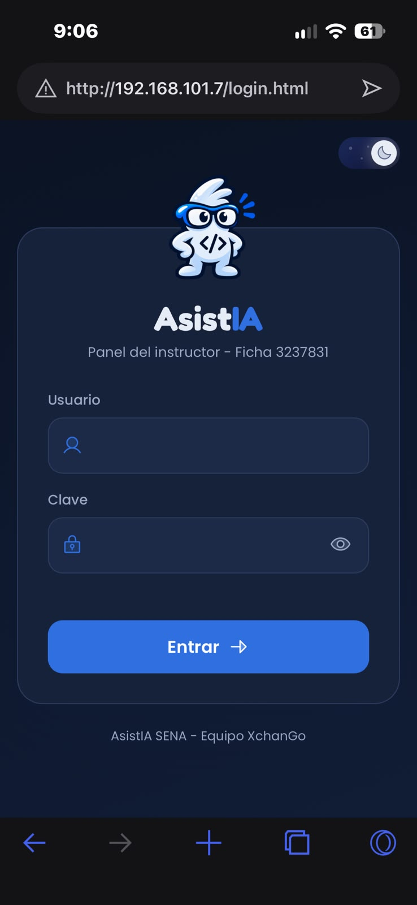
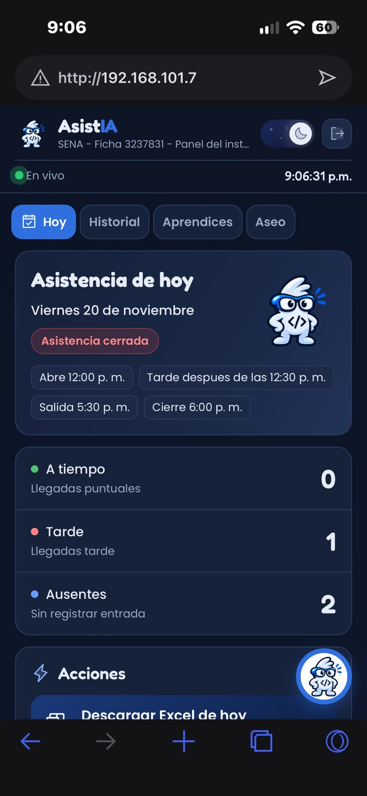
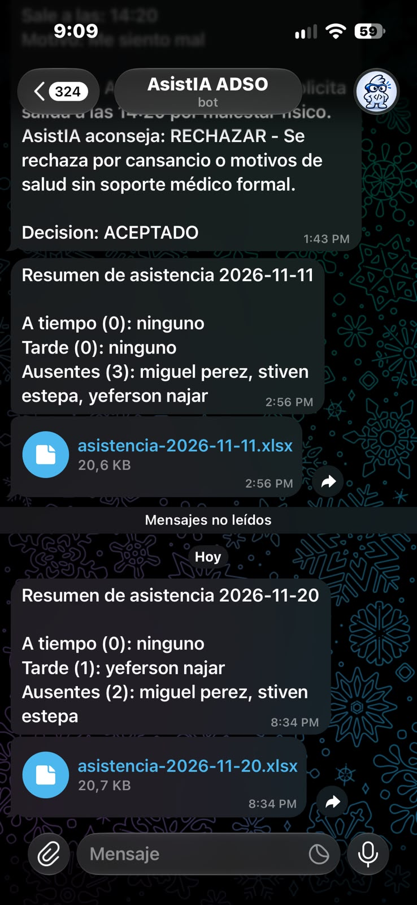
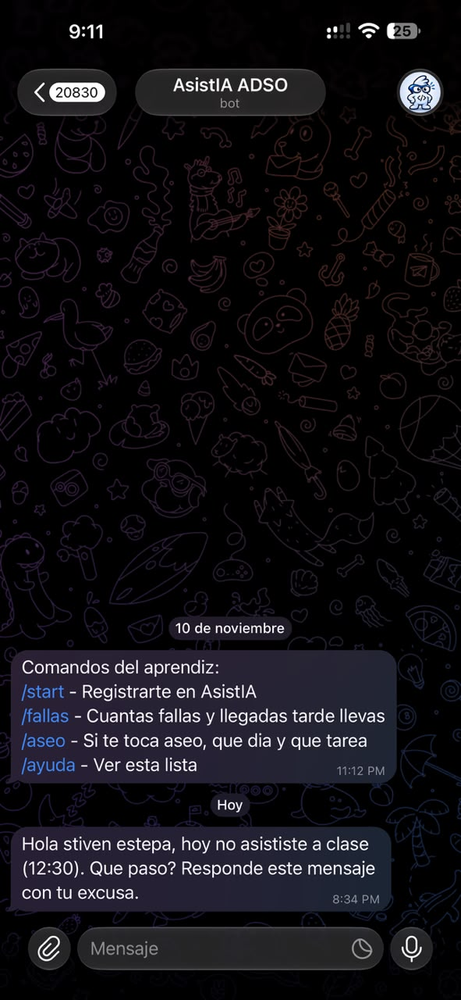
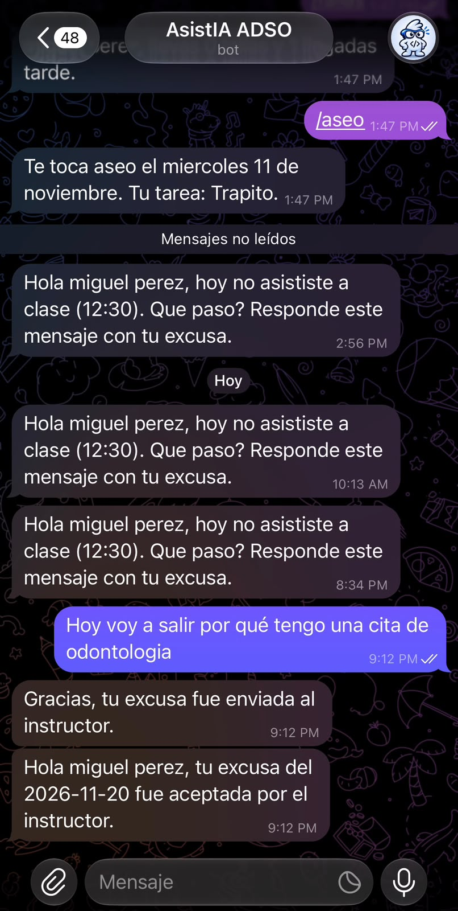

AsistIA SENA
Presiona → para iniciar
EQUIPO XCHANGO
AsistIA SENA
Asistencia inteligente con reconocimiento facial ¡La asistencia se toma sola!
El problema
Llamar a lista le quita tiempo a la clase
“¿Presente?”
-
01
Se pierden minutos
Todos los días, al empezar la clase, se gasta tiempo nombrando uno por uno.
-
02
Alguien responde por otro
Con la lista hablada es fácil que un compañero diga “presente” por el que no llegó.
-
03
Todo se hace a mano
Después toca pasar el Excel, avisarles a los que faltaron y decidir a quién le toca el aseo.
La idea
La cámara reconoce. La puerta saluda. El instructor se entera.
La asistencia se toma sola. AsistIA une:
- Reconocimiento facial
- Maqueta con ESP32
- Servidor
- Bot de Telegram
- Inteligencia artificial
Cómo funciona
De la puerta al panel en segundos
- 1
Llega
El PIR lo saluda y el ultrasónico prende la cámara.
- 2
Cámara
Python y OpenCV reconocen la cara en el celular.
- 3
MQTT
Se manda quién llegó, a qué hora y si fue a tiempo.
- 4
Maqueta
El ESP32 muestra el nombre, prende el LED y abre la talanquera.
- 5
Servidor
Guarda la llegada y sale en el panel del instructor.
tema · sena/asistencia/registro
{ "nombre": "yeferson najar", "hora": "12:25", "estado": "A_TIEMPO" }
Tecnologías
Cada parte con la herramienta que le sirve
Los datos se guardan en archivos JSON, sin base de datos.

Cámara
Python + OpenCV
El detector Haar encuentra la cara y el reconocedor LBPH dice quién es.

Maqueta
ESP32
Programado en C++ con PlatformIO: lee los sensores y mueve la talanquera.
Comunicación
MQTT con EMQX
Así se hablan la cámara, la maqueta y el servidor, con conexión cifrada.

Servidor
NestJS
En TypeScript: guarda las llegadas y revisa el horario cada minuto.


Mensajes
Telegram + Gemini
El bot les avisa a todos y la inteligencia artificial ayuda con las excusas.


Panel
HTML, CSS y JS
La página del instructor, con modo oscuro y versión para celular.
La maqueta
La estación de la puerta
8partes trabajando juntas
El ESP32 lee los sensores, maneja las pantallas y abre la talanquera. La cámara es el celular, a la altura de la cara.
- 01
Cámara (celular)
Reconoce la cara con DroidCam
- 02
Sensor PIR
Detecta movimiento y saluda en la pantalla
- 03
Ultrasónico
Prende la cámara y cuenta las personas que pasan
- 04
Sensor táctil
Abre o cierra la asistencia
- 05
LCD y OLED
Muestran el nombre y si llegó a tiempo o tarde
- 06
LED verde y rojo
Verde: a tiempo · Rojo: tarde o no registrado
- 07
Servo
Abre la talanquera 3 segundos
- 08
Relé
Prende la luz del salón


Así se ve
El panel, en el celular del instructor
- Login con usuario y clave
- Llegadas al instante, cada 2 segundos
- A tiempo, tarde y ausentes con su número
- Modo claro y oscuro
- Diseño propio para celular
El panel del instructor
Todo lo de la clase en una página
El bot de Telegram
AsistIA ADSO les escribe a todos
Al instructor le llega el resumen, al que faltó le pide la excusa y el instructor la acepta o la rechaza.



Cierre automático
6:00p. m.
A esa hora la asistencia se cierra sola. El instructor también puede cerrarla antes desde el panel, con una ventana para confirmar.
-
Telegram a cada ausente
“Hoy no asististe a clase. ¿Qué pasó? Responde con tu excusa.”
-
Resumen y Excel al instructor
Cuántos llegaron a tiempo, tarde y quiénes faltaron, con el archivo adjunto.
-
Aseo para los 3 últimos que llegaron tarde
Trapero, escoba y trapito, publicado en el grupo. Si no alcanzan, se completa con ausentes.
Inteligencia artificial
Gemini aconseja,
el instructor decide.
Excusas
Resume lo que escribió el ausente y sugiere si la excusa es válida o no.
Permisos de salida
Redacta bien el motivo y aconseja si aceptarlo. El Excel del permiso llega por correo.
Chat del panel
Responde preguntas sobre la asistencia con los datos reales de la ficha.
La última palabra siempre es del instructor, con estos dos botones.
Seguridad
Lo que protege el sistema
Login del instructor
Sin usuario y clave no se ven los datos ni se cierra la asistencia.
Revisión en el servidor
Aunque llamen la API directo, sin sesión responde 401 (no autorizado).
Claves en el archivo .env
No quedan escritas en el código ni se suben a GitHub.
MQTT cifrado con TLS
Los mensajes viajan cifrados hasta el broker.
Función limpiar()
Lo que escribe un aprendiz no se ejecuta como código en la página.
Ventana de confirmación
Pregunta antes de cerrar, porque los mensajes no se pueden borrar.
Pruebas
Así comprobamos que funciona
6/6
Pruebas automáticas
Pasan todas: la regla del aseo y las fechas.
9
Tamaños de pantalla
Del celular al computador, sin que nada se salga.
52
Límite de distancia
Los registrados dan entre 36 y 49; el que no está registrado sale NO REGISTRADO.
8:30
Prueba del horario
A las 8:29 salió A TIEMPO y desde las 8:30, TARDE.
Dificultades
Lo que salió mal y cómo lo arreglamos
Problema
Cómo lo solucionamos
OpenCV 5 ya no traía el detector de caras
Usamos OpenCV 4, que sí lo trae
El ESP32 no se conectaba al hotspot
Borramos la memoria del ESP32 y volvimos a subir el código
El antivirus bloqueaba la conexión a MQTT
La cámara y el servidor usan los certificados de confianza de Windows
Confundía a una persona con otra
Cámara del celular, fotos nuevas, límite de 52 y 12 confirmaciones
Los sensores contaban de más
El ultrasónico pide 5 lecturas seguidas y el táctil espera 1 segundo
EQUIPO XCHANGO
¡Gracias!
AsistIA junta Python, electrónica, MQTT, un servidor, Telegram e inteligencia artificial para que la asistencia no le quite tiempo a la clase.
¿Preguntas?